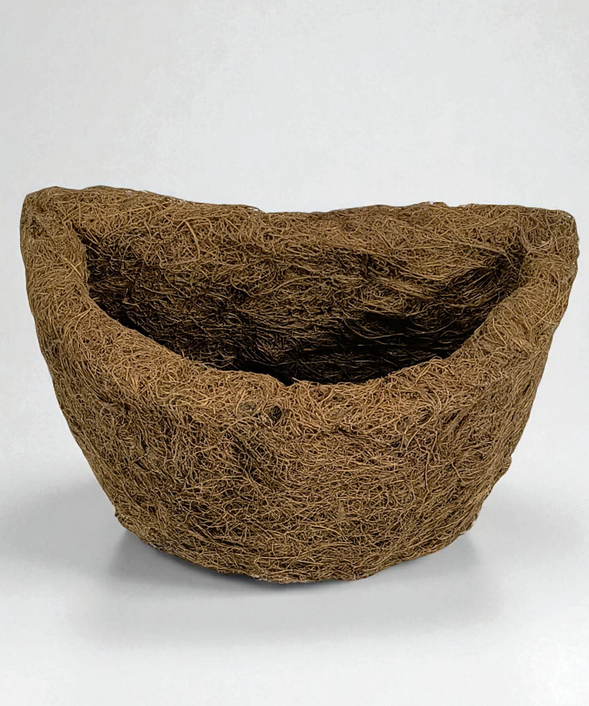
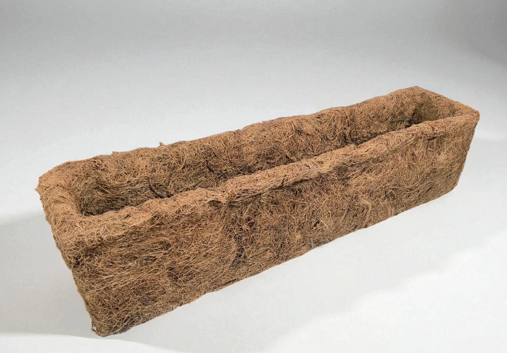
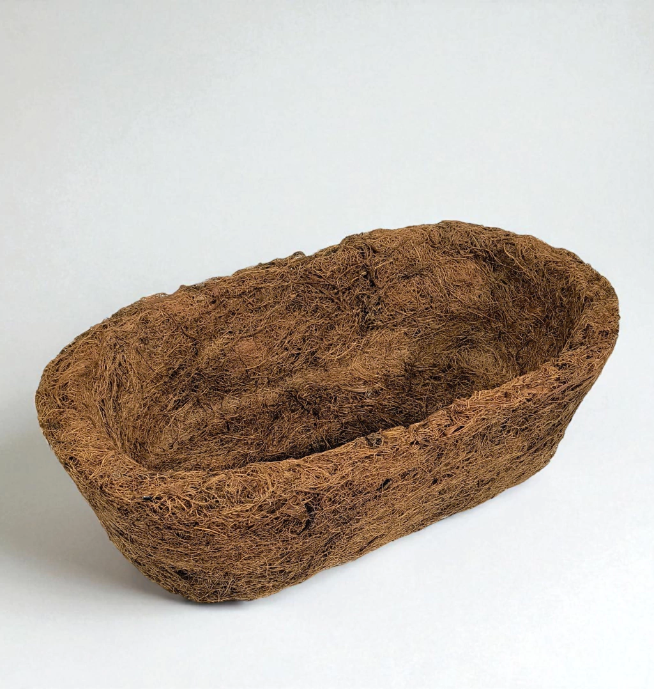

Maceta Media Luna Repuesto De Pared.
La Maceta Media Luna Repuesto De Pared es el complemento ideal para mantener y renovar tus espacios verdes. Con medidas de 30.5 cm de largo, 16.5 cm de alto y 15 cm de ancho, está fabricada en fibra de coco, un material natural, resistente y ecológico. Este repuesto asegura la durabilidad y funcionalidad de tus macetas de pared, facilitando la decoración y cuidado de tus plantas. ¡Dale un toque práctico y natural a tus muros con esta maceta resistente!
$112.00

Maceta Jardinera Repuesto De Balcón o Pared.
La Maceta Jardinera Repuesto De Balcón o Pared es ideal para renovar tus espacios verdes con estilo y funcionalidad. Con medidas de 73 cm de largo, 17 cm de alto y 19 cm de ancho, ofrece un diseño práctico y resistente. Fabricada en fibra de coco, este repuesto garantiza durabilidad y un toque natural para tus plantas. Perfecta para balcones o paredes, es la opción ecológica para mantener tu jardín siempre fresco y cuidado.
$348.00

Maceta Jardinera Repuesto Ovalada.
La Maceta Jardinera Repuesto Ovalada es el complemento perfecto para renovar y embellecer tus espacios verdes con estilo y funcionalidad. Con medidas ideales de 45 cm de largo, 17 cm de alto y 27 cm de ancho, esta maceta ofrece un diseño práctico y elegante que se adapta perfectamente a cualquier ambiente.
$209.00